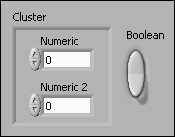

The front panel contains extra controls that do not belong to the custom control. For example, the following custom control front panel contains both a cluster and a Boolean control.
To correct this error, delete any controls on the front panel that do not belong to the custom control.